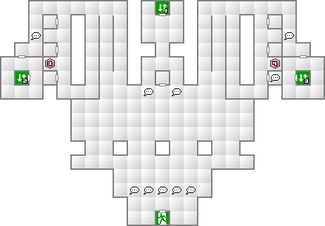
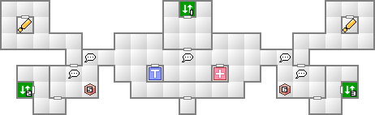
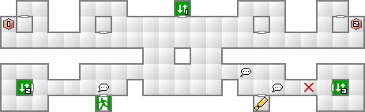
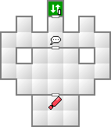

既にユダのCOMPを手に入れていると思われるので、後は3階の管制室に行くだけだ。
鬼女ラ・リョローナはメ・ディアを所持しているため、前衛の龍王ヤトノカミを倒してラ・リョローナを前に出して倒そう。
妖魔マルトはかすみ斬り、妖鬼トケビはラク・ンダ、妖精シルキーはメ・ディアか忠義の氷結を使っていれば基本的に大丈夫だ。引き継いだ悪魔だけでも十分に勝てる相手である。
天海空港クリア後に利用可能になる施設の一つ。ここではインストールソフトを購入することができる。オススメはヒロえもん。戦闘終了時のアイテム取得率が格段にアップする。これを入れておくだけで資金的にかなり余裕になるだろう。なお、シナリオが進めばラインナップも増えていくが、その場合はメールで知らせてくれるようになっている。
利用可能になるもう一つの施設。パラダイムＸ内に存在するペットショップだが、ここでは悪魔の取引を行うことができる。依頼内容によっては主人公のレベル以上の悪魔を仲魔にすることができる。利用の一例を紹介しよう。
アヌーンの依頼で、忠誠度が5の悪魔を何でも良いので渡し、堕天使セエレを入手する。早速セエレの忠誠度を5にしてエア・セエレに変化させよう。
次に、アヌーンの依頼が増えているので、依頼達成マークを増やす意味でも、「愚鈍」と「友愛」の悪魔を忠誠度5にして渡してしまおう。シーアークで適当に捕まえてきた悪魔でＯＫだ。これで凶鳥モー・ショボーと幽鬼チュレルを入手する。
幽鬼チュレルを忠誠度5にしてアヌーンに渡し、魔獣ネコマタを入手する。あとはネコマタの忠誠度を5にすればニャン２クローを入手することができる。攻撃力66で一列攻撃＆速さ上昇効果の優れものだ。例えネミッサが後列でも装備させよう。
また、余ったモー・ショボーを忠誠度5にしてアイテムに変化させ売却すれば￥30000の儲けとなる。さらに、同じ依頼を何度も受けられるので、「狡猾」な悪魔さえ持っていればいつでもネコマタと交換できるのである。今度は戦力として活躍してもらってもいいだろう。
このように、王国屋ではわらしべ長者感覚で悪魔を次々と変化させることができる。上手く活用していこう。


北西か北東の小部屋でイベント。ユダのCOMP入手に必要。

南東の小部屋でユダのCOMPを入手。
南西の出口は天海フロートへ繋がる。現時点では通行不可能。

| 妖魔アプサラス(16) | 魔獣カンフュール(15) | 地霊コロポックル(13) |
| 夜魔キキーモラ(14) | 堕天使シャックス(17) | 妖鬼ビルヴィス(16) |
| 凶鳥モー・ショボー(15) | 邪鬼イッポンダタラ(13) | 怪異カシマレイコ(13) |
| 邪龍チョトンダ(12) | 幽鬼オバリヨン(11) | 悪霊ガロット(18) |
| 妖魔アプサラス(16) | 魔獣カンフュール(15) | 地霊コロポックル(13) |
| 夜魔キキーモラ(14) | 堕天使シャックス(17) | 妖鬼ビルヴィス(16) |
| 邪鬼イッポンダタラ(13) | 怪異カシマレイコ(13) | 幽鬼オバリヨン(11) |
| 悪霊ガロット(18) |
凶鳥モー・ショボーの自爆に注意。最大で100前後のダメージを全員が受けてしまう。